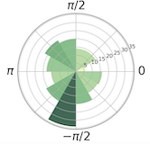

|

|
Voytek Lab, UCSD, Undergraduate Researcher, Mar.2018-Present
Pre-Stimulus Event Related Potential(ERP) Effect
• Collected data from online datasets (sample datasets from mne and from the VEPESS dataset)
and participated in collecting electroencephalogram data of several UCSD students
• Cleaned data using PCA and Autoreject and Processed data:
-- Applied general alpha band width filter to the data, from 8Hz to 12Hz
-- Used Hilbert transform to transfer the data from time domain to phase domain
-- Did the epoch around each event, which is select 1s of data around each event
• Evaluated the relationship between pre-stimulus phase (phase before the event happens, usually
about 0.1ms) and ERP. This relationship belongs to circular-linear statistics.
|
|
|
iFlytek, Hefei, Data Engineer Intern, Summer 2017
• Individually developed a teacher recommendation system with Python, Spark and Hive for
high school students
• Organized hundreds of features of student activities in an education application
• Read papers of image analysis and computer vision on education videos used in a classroom,
specifically identifying and recording actions from students and teachers
|
|
|
ING Shanghai, Shanghai, Data Analyst Intern, Summer 2016
• Analyzed seasonal financial reports from different listed companies
• Built a tool to increase efficiency of financial data analysis for the group, easier to cross-check
data between different tables
|
|
|
CSE 170, Interaction Design, Link to project
• Accomplished an interaction design of WeOrder, a web app for college students to order food
online with personalized allergic settings
• Implemented critical prototype features and UI design, conducted UI tests on all pages and
implemented features on platform, applied new changes to code base / UI with users' feedback
• Created version B of prototype to test against default design, analyzed comparative evaluation
results and finalized UI for best user experience possible
|
|
|
COGS 189, Brain Computer Interface, Link to paper
• Researched the core steps of Brain Computer Interface driven speller system: signal acquisition,
preprocessing or signal enhancement, feature extraction, classification and control interface
• Studied the function of P300 wave, an ERP component during the decision making in brain
communication system
• Compared the performance (accuracy,
exibility and eficiency) of different models of BCI
spellers including Farwell-Donchin paradigm, Region-based P300 speller and The Hex-o-Spell
|
|
|
COGS 118A, Intro to Machine Learning I, Link to paper
• Researched on the comparison between Di�erent Classification Algorithms including SVM,
K-nearest neighbors, Logistic Regression, Bagging, and Multilayer Perceptron
• Conducted experiments with three datasets, displayed and analyzed the average accuracies of
each algorithm applied onto different datasets under different splits
|
|
|
COGS 118B, Intro to Machine Learning II, Link to video presentation
• Researched on the comparison between Di�erent Classification Algorithms including SVM,
K-nearest neighbors, Logistic Regression, Bagging, and Multilayer Perceptron
• Conducted experiments with three datasets, displayed and analyzed the average accuracies of
each algorithm applied onto different datasets under different splits
|
|
|
Instructional Apprenticeship for COGS 108, UCSD CogSci Department, Winter 2018
• Graded assignments and final projects of students in COGS 108 Data Science in Practice.
• Designed instructional materials with TAs and co-leaded the discussion sections
|
|
|
Technical Director, Chinese Union, UCSD, 2016-2017
• Developed and maintained a new website (especially the Web front-end development and data
maintenance) for Chinese Union (1000+ membership). www.chineseunion.org
|
|
{kind=link}